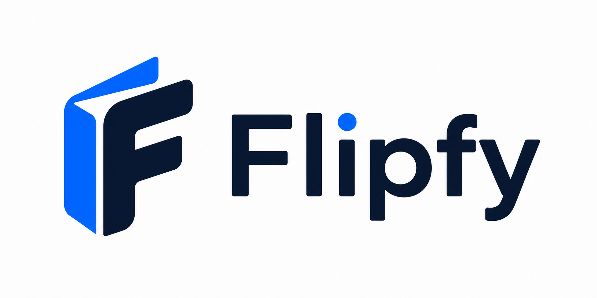

Convert flipbooks to PDF in your browser.
Drop a ZIP flipbook, PDF flipbook, or image sequence and download a standard PDF. Your files never leave this device.
Choose flipbook files
Use one PDF file, or select multiple image pages at once.
Supported now
ZIP flipbooks are scanned for page images or PDFs. Existing PDF flipbooks are copied directly. Image sequences are sorted by filename and assembled into a high-quality PDF.
Handled safely
SWF and proprietary flipbook packages are detected and rejected with a clear message because modern browsers cannot parse them safely without extra runtimes.
Session only
Flipfy does not use localStorage, cookies, analytics, forms, or network requests. Closing the tab clears the working state.